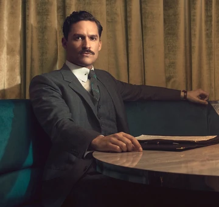

JOKER IS ARRESTED AND TAKEN TO ARKHAM ASYLUM ASYLUM AFTER CRIME AND MURDER SERIES
everyone is scared
lunatic's reaction to being arrested.
The Joker is Batman's main arch-nemesis, this completely insane character is one of the most popular villains today. Despite being a fan favorite of comics, the origin of the Joker is surrounded by many mysteries and details that the average fan of the character is unaware of.
Well, at first not everyone was like this character. In fact, the first time its author, Jerry Robinson, presented the Joker concept art, they were rejected. At the time, executives at DC Comics thought it made no sense to have a clown-faced villain.
The Joker appeared in the comics without any sort of explanation or origin story. His debut was in Batman #1, and the character was presented only as a villain.To this day, DC Comics has not made any official story about the "birth" of the Joker official, with his entire past unknown and the identity of the man behind the clown smile remaining a great mystery.
In the comic "The Killing Joke", where the Joker is the main character, there was an attempt to give an origin story to the Clown of Crime. Here, Joker is portrayed as a former employee at a chemical plant, who decided to quit to pursue a career as a comedian.
The criminals, however, manage to convince him to go ahead with the coup. During the heist, things don't go well and Batman appears to capture the criminals. It is at this moment that the future Joker messes up and ends up falling into a well of chemicals. Her hair turns green and her skin white, like a porcelain doll.
The Joker is a controversial character and all because his insanity knows no bounds. He is capable of anything and doesn't need any reason for it!.
Four of the most popular events involving the Joker are linked to four very popular characters from DC Comics. The Clown Prince of Crime was responsible for the death of Jason Todd, the second Robin, murdering him in an extremely violent way.
Then followed Sarah Essen Gordon (the second wife of police officer Jim Gordon) and Barbara Gordon (Batgirl), however the latter ended up surviving by becoming a paraplegic, thus having to abandon her career as Batgirl, later becoming the Oracle.
His insanity culminated in his attack on Superman. After kidnapping Louis Lane, he poisoned the Man of Steel with a mixture of Kryptonite and Scarecrow's Fear Gas. Clark began to hallucinate and when he looked at Louis he didn't see her, but the villain Apocalypse. This caused Superman to end up unwittingly murdering Louis Lane, something that drove Clark insane.
But what is the effect of these attitudes? What is the Joker's true purpose? Before Batman crossed paths with the Joker, he thought that all criminals were the same, that they were only looking for money and that there was a logical sequence to everything.
Upon meeting the Clown of Crime, he realizes that he must not underestimate his enemies and that his strong side can quickly become the weakest. Batman becomes wiser and wiser thanks to the Joker.
After the Joker, Batman realizes he has the ability to make the choices that no one else can, he becomes the Dark Knight, thanks to the Joker.
The Joker isn't a great villain because he has an iconic laugh, or because of his looks. He is excellent because he has a profound effect on the story and the protagonist, he is the perfect antagonist for the Dark Knight.
Arkham Asylum, learn everything about the place
The creation of the asylum
The asylum was named in honor of its founder, Amadeus Arkham. Amadeus' mother suffered from psychiatric disorders that led her to commit suicide. After inheriting his family home, Amadeus decided to create an institution to help people who suffered from the same problems that his mother had suffered.
photo of the front of Arkham Asylum.
Amadeus later married and had a daughter, the three lived in the house that would become Arkham Asylum. While the Asylum was not ready, Amadeus gave consultations at another hospital. One day Amadeus receives a notification from the police informing him that one of his patients, called "Mad Dog", had escaped from the psychiatric hospital where he was hospitalized.
Upon arriving in Arkham, Amadeus found his wife and daughter dead, with the name "Mad Dog" written on their bodies. That same year, Arkham Asylum opened its doors to the public."Arkham Asylum is a safe psychiatric hospital, I can guarantee that!"It was the speech of the mayor of Gotham City about hospital security, like this
trying to reassure all citizens.
The first patient
Amadeus Arkham
Amadeus Arkham did everything in his power to ensure that one of the Asylum's first patients was "Mad Dog" himself. The criminal ended up being admitted to Arkham and during treatment with electric shocks, Amadeus electrocuted him to death. The supposed accident was covered up and Amadeus ended up going crazy, thinking that his role was not that of a doctor, but that of an executioner.
Amadeus ended up being admitted and dying as a patient in his own asylum. There are rumors that even today the spirit of Amadeus roams the corridors of the asylum, feeding on the madness of his patients, as no patient has ever been cured there again.
Tribute to THOMAS WAYNE (BIOGRAPHY)
by gotham gazette

Thomas was a billionaire and owner of Wayne Enterprises. At some point in his life, he married Martha and hired Alfred Pennyworth as a butler at his mansion. Thomas also hired an architect to build a house just for Martha, as a gift.He later had a son, Bruce Wayne.
Raising Bruce
Some time before his tragic death, Thomas sat next to Bruce at Wayne Manor, near the family crest, and told him that despite the mansion being built with money from railroads, real estate and oil, the first generation of Waynes made a fortune. as hunters, selling leather and furs to the French
On June 26, 1981, Thomas took his family on a night out to the Aragon Theater in Gotham City. After returning from the cinema, the Wayne family was stopped by a mugger, Joe Chill, on an abandoned street. When he pulled out a gun, Thomas quickly tried to disarm him, but was shot in the process. The robber also shot Martha, leaving young Bruce alone with his dead parents.[2]
Legacy
During his parents' funeral, a devastated Bruce ran through the woods outside Wayne Manor and eventually fell down a well, thus finding the Batcave.[2]
The death of Thomas and Martha Wayne also inspired Bruce to become the vigilante known as Batman years later. During the rise of Superman, Bruce told Alfred what Thomas told him years ago as a child, about the family having made their fortune as hunters originally.[2]
Personality
Thomas was known for being a loving father and husband and, like his son Bruce, was extremely brave and protective of his loved ones, as he tried to fight Joe Chill when the latter had his family at gunpoint, determined to protect his wife and son. Apparently, Thomas was proud of his hunting ancestors and the Wayne family history, doing his best to pass this knowledge on to his son. As an adult, Bruce worries about not being able to live up to his father, despite already being older than Thomas had ever been, so he uses this as extra justification for the argument that he needs to overthrow and kill Superman.